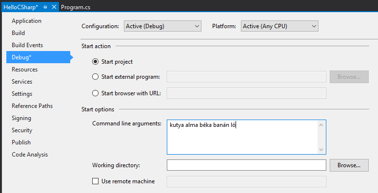

C# alapok, szintaxis¶
Célunk, hogy a hallgatók legalább részben megértsék és ráérezzenek a C# szintaktikájára, megismerkedjenek alapvető nyelvi elemekkel és konstrukciókkal.
Hello C#!¶
A Visual Studio indítóablakában válasszuk a Create a new project opciót. Magyarázzuk el, hogy van lehetőségünk előre gyártott sablonokból létrehozni projekteket, illetve hogy
- egy C# projekt egy szerelvénnyé fordul (.dll, .exe).
- a Solution dolga, hogy logikailag összefogja a Project-eket (több-többes kapcsolatban vannak).
- a projektek között referenciákat adhatunk másik projektekre úgy, hogy a fordítási mechanizmus figyelembe veszi a referenciákat és szükség esetén újrafordítja a szerelvényeket.
- a projektek hivatkozhatnak külső forrásból származó szerelvényekre is NuGet csomagok formájában. A NuGet egy egységes módszer szerelvényeink terjesztésére.
Hozzunk létre egy új C# Console Application-t! Ehhez keressük ki a sablonok közül a Console App nevűt (ne a .NET Framework-öset). A neve legyen HelloCSharp.
New Project dialogusablak kereső
A kikereséshez használhatjuk felül a szövegdobozos szűrőt, illetve a legördülő listás szűrőket is (Nyelv: C#, Platform: Windows, Projekttípus: Console)
A sablon konfigurációjánál adjunk meg egy olyan helyet, ahová van írási jogunk. A Place solution and project in the same directory opciót kapcsoljuk be, így nem fog létrejönni egy felesleges mappa a könyvtárszerkezetben. A .NET verziót állítsuk .NET 8-ra.
Észrevehetjük, hogy az alkalmazás sablonok között sima és (.NET Framework) jelölésűek is vannak. A simák alapvetően a modernebb .NET Core/.NET 5-8 platformot célozzák, a .NET Framework ezekhez képest egy régebbi platform.
- .NET Core: a .NET Framework modularizált, modernizált, cross-platform és nyílt forráskódú megvalósítása. Kisebb NuGet csomagokban érhető el a teljes .NET Framework funkcionalitása (Collections, Reflection, XML feldolgozás, stb.).
- .NET Framework: a „klasszikus”, teljesértékű .NET keretrendszer, out-of-the-box támogatja a legelterjedtebb alkalmazásfejlesztési lehetőségeket. A .NET Core megjelenését követően is támogatott, enterprise környezetekben használatos, ugyanis néhány enterprise technológia elsődlegesen csak ebben támogatott (pl. szerver oldali WCF). Csak Windows-ra telepíthető.
- .NET 5 és fölötte: A .NET Core 3.1 utáni fő verziói. Már elnevezésében is jelzi, hogy ez egyben a korábbi .NET Core és .NET Framework verzióknak is utódja.
Az alábbi elemeket ismertethetjük, mielőtt a kódírásba belekezdünk:
- Rövid áttekintés az IDE-ről: menüsáv, Solution Explorer, Properties, Output, Error List ablakok, ablakozórendszer. Mutassuk meg, hogy drag-n-drop műveletekkel testreszabható a felület, pl. helyezzük a Solution Explorert a képernyő bal oldalára. Ha valaki véletlenül átrendezi az alapértelmezett elrendezést, a menu:Window[Reset Window Layout] lehetőséggel visszaállíthatja.
- A projekt tulajdonságok (menu:jobb klikk[Properties]) oldalán az Application fülön megnézhetjük, hogy az Output type értéke határozza meg, hogy milyen jellegű (konzolos, Windows, osztálykönyvtár) alkalmazást készítünk.
- Mutassuk meg, hogy milyen alapvető szerelvényekre adunk referenciát a projektben!
- Nézzük meg a
Program.csfájl tartalmát és fussuk át a látható elemeket! - Magyarázzuk el a
usingésnamespacekulcsszavak jelentését, egymáshoz képesti viszonyukat! A névtér értéke egy újonnan létrehozott fájlnál alapértelmezetten Projektnév.Mappaszerkezet alakú, érdemes konvencionálisan ezt követni. Sok hallgatónál nem tiszta, hogy hogyan viszonyul egymáshoz a névtér és a szerelvény fogalma, ezért próbáljuk meg ezt tisztázni! - Utaljunk arra, hogy alapvetően kizárólag objektumorientáltan tudunk kódot írni, így a
Programegy osztály, aMainbelépési pont pedig egy statikus metódus. - Beszéljünk röviden a C# elnevezési konvenciókról! A publikus elemeket (pl. Java-val és JavaScripttel ellentétben) és minden metódust ökölszabályként PascalCasing elnevezési konvenció követ, a nem publikus elemeknél camelCasing (ezek közül vannak kivételek és más konvenciók, de ez egy gyakori megközelítés).
Egészítsük ki a Main metódust az alábbi kódrészlettel, közben hívjuk fel a figyelmet az IntelliSense használatára:
int a = 5;
int b = 7;
Console.WriteLine(a + b);
Console.ReadLine();
Az IntelliSense-t demonstrálhatjuk az alábbi módon:
- A kódban bármely logikus helyen használható az IntelliSense a Ctrl+Space billentyűkombinációval, ezen kívül alapértelmezetten felugrik kódírás közben is.
- Írjuk be a
Consoleés a.WriteLine()elemeket úgy, hogy gépelés közben az IntelliSense legördülőből válasszuk ki az elemet, majd Tab billentyűvel véglegesítsük a választást. - Használjuk a
cwcode snippetet, amit az IntelliSense is jelez, azaz írjuk be:cwmajd nyomjunk kétszer Tab-ot. - Ha a
Console.ReadLine()helyettConsole.Readline()-t írunk, elsőként az IDE azonnal javítja a hibát. Ha ezt a javítást visszavonjuk Ctrl+Z), lehetőségünk van a javításra a Ctrl+. használatával: a fejlesztőeszköz észreveszi, hogy hibát vétettünk, és felkínálja a gyakori megoldásokat. - Overload-ok: jelöljük ki a
WriteLinehívás nyitó zárójelét, és írjuk be ismét a nyitó zárójelet. Így előjön az overload-ok listája, amik közül a megfelelőt a föl/le iránybillentyűkkel választhatjuk ki. Az overload listát megnyithatjuk úgy is, hogy a zárójelben bárhova írunk egy vessző karaktert. Az overload azt jelenti, hogy ugyanazzal a függvénynévvel több, különböző szignatúrájú metódust is felvehetünk, a megfelelő függvény kiválasztása a megadott paraméterek száma és típusa alapján történik.
Indítsuk el az alkalmazást! Ehhez a fent található Start lehetőséget használhatjuk, de mondjuk el, hogy ez a menü menu:Debug[Start Debugging] (F5) lehetőséggel ekvivalens.
Mutassuk be a for és foreach vezérlési szerkezeteket! A projekt Properties oldalán (kbd:[Alt+Enter] a projekt kijelölése után) adjunk meg a Debug fülön a Start Options blokknál legalább öt tetszőleges parancssori argumentumot (szóközzel elválasztva), pl. kutya alma béka banán ló.

{kind=link}
for (int i = 0; i < args.Length; i++)
Console.WriteLine(args[i]);
foreach (string arg in args)
Console.WriteLine(arg);
Console.ReadLine();
Indítsuk el, és gyönyörködjünk.
Debug¶
Rakjunk egy breakpointot (F9), vagy klikkeljünk baloldalon a függőleges sávon a kód sorszáma mellett) a Console.WriteLine(args[i]); sorra, majd indítsuk újra az alkalmazást!
Amikor a breakpointon megáll az alkalmazás futása, a sor sárga színű lesz.
Ekkor vigyük az egeret az i, az args és az args.Length elemek felé, és mutassuk meg, hogy láthatjuk az aktuális értékeiket, komplexebb objektumok esetén be tudjuk járni az objektumgráfot.
A Watch ablakba is írhatunk kifejezéseket, és megmutathatjuk a Locals ablakot is. F10-zel (vagy a menüsoron a Step Over elemmel) lépjünk tovább, nézzük meg, milyen sorrendben értékelődik ki a for ciklus. Az F5-tel továbbengedhetjük az alkalmazás futását, majd zárjuk is be.
Mutassuk meg a Conditional Breakpoint használatát is. Tegyünk még egy breakpointot a másik Console.WriteLine-ra is. menu:Jobb egér gomb az első breakpointon[Conditions…], majd adjuk meg az alábbiakat: Conditional Expression Is true (i == 3). A másik breakpointon is adjunk meg feltételt: Hit Count = 4. Mindkét alkalommal a 4. elemen (banán) állunk meg. Megjegyezhetjük, hogy a Conditional Breakpoint használatával nem érdemes mellékhatást okozó műveleteket megadni, illetve hogy jelentősen le tudja csökkenteni a debuggolás sebességét.
Tulajdonságok (Property-k)¶
Hozzuk létre a Person adatosztályt! Ehhez menu: jobb katt a projekten[Add > Class], a fájl neve legyen Person (a kiterjesztést automatikusan hozzábiggyeszti a Visual Studio, ha nem adjuk meg).
.NET-ben nincs megkötés arra, hogy a kódokat tartalmazó fájlok és az egyes típusok számossága hogyan viszonyul egymáshoz: lehetséges egy kódfájlba is írnunk a teljes alkalmazás-kódot, illetve egy osztályt is szétdarabolhatunk több fájlra (ehhez a partial kulcsszót használjuk).
A C# tulajdonság (property) egy szintaktikai édesítőszer, amely egy objektumpéldány (vagy osztály) egy explicit (memóriabeli) vagy implicit (származtatott vagy indirekt) jellemzőjét írja le. Egy tulajdonsággal két művelet végezhető: lekérdezés (get) és értékadás (set); ezeknek megadható külön a láthatósága, és a kettő közül elegendő egy implementálása. A legtöbb C# szintaktikai édesítőszer a boilerplate kódok írásának elkerülése végett készült, így kevesebb kódolással érjük el ugyanazt az eredményt (sokszor az IL kód nem is változik, gyakorlatilag hasonló a kódgeneráláshoz).
A Person osztályban hozzuk létre a string Name property-t, name osztályváltozóval (field). Ehhez használjuk a propfull code snippetet (propf, majd Tab+Tab, ezután Tab-bal lehet lépkedni a módosítandó elemek között):
public class Person
{
private string name;
public string Name
{
get { return name; }
private set { name = value; }
}
public Person(string name)
{
this.name = name;
}
}
Láthatóság
Figyeljünk az osztály láthatóságára is, alapból nem publikusként generálódik!
Igazából csak két további (kódban nem látható) metódust hozunk létre, mintha egy-egy GetName és SetName metódust készítenénk, viszont használat szempontjából ugyanolyannak tűnik, mintha egy sima mező lenne.
A settert privát láthatóságúra tesszük, ezért csak egy Person példányon belülről tudjuk állítani a Name property értékét.
Jegyezzük meg, hogy a getterben és setterben teljesen más jellegű műveleteket is végezhetünk (pl. elsüthetünk egy eseményt, hogy megváltozott a felhasználó neve, naplózhatjuk, hányszor kérték le a nevét, stb.).
A property egyik nagy erénye, hogy osztályon kívülről az osztályváltozóknál megszokott szintaxissal használhatjuk.
A Main függvénybe írhatjuk például:
Person p = new Person("Eric Lippert");
p.Name = "Mads Torgersen";
Console.WriteLine(p.Name);
Debuggerrel figyeljük meg, hogy az első sor a konstruktort, míg a második a property setterét, végül a harmadik sor ugyanazon property getterét hívja.
Mivel a backing field állításán kívül nem csinálunk semmit a property kódban, ezért használhatjuk a propg code snippetet is:
public string Name { get; private set; }
Ez az ún. auto-implementált property szintaxis. A property által lekérdezhető-beállítható field generálódik, arra a kódban nem is tudunk hivatkozni - ez az egységbe zárás miatt előnyös.
A láthatóság miatt a Main függvényünkben a setter hívás már nem fordul, kommentezzük ki.
//p.Name = "Mads Torgersen";
Létezik még a prop code snippet is, ami mindkét módosítószót publikusan hagyja.
Láthatósági módosítószót a get és set közül csak az egyik elé tehetünk ki, és az is csak szigoríthat a külső láthatóságon (ekkor a másik a külsőt kapja meg).
Ez a megoldás az előzővel teljes mértékben ekvivalens (csak nem látjuk a generált backing fieldet, de valójában ott van). Ha van időnk, akkor vizsgáljuk meg decompilerben (pl. Telerik JustDecompile), hogy valóban így van.
Az előzőhöz hasonlóan vegyük fel a születési dátumot is.
A születési dátum nem változhat, gyakorlatilag readonly mezőről van szó.
Ha egy tulajdonság értékét az objektum is csak a konstruktorban tudja megadni, akkor a setter teljes mértékben elhagyható:
public DateTime DateOfBirth { get; }
public Person(string name, DateTime dateOfBirth)
{
Name = name;
DateOfBirth = dateOfBirth;
}
Ez a szintaktika megegyezik azzal, mintha egy readonly mezőt használnánk, azaz a mező értéke legkésőbb a konstruktorban inicializálandó.
Vegyünk fel neki egy azonosítót, ami egy Guid struktúra típusú legyen:
public Guid Id { get; } = Guid.NewGuid();
Ez egy csak lekérdezhető tulajdonság, ami konstruáláskor inicializálódik egy új véletlenszerű azonosító értékre.
Megadhatjuk a kort, mint implicit/számított tulajdonságot:
public int Age { get { return DateTime.Now.Subtract(DateOfBirth).Days / 365; } }
Mivel a függvényünk törzse egyetlen kifejezéssel megadható, ezért elhagyva a sallangot (return, kapcsos zárójelek, stb.) expression bodied property szintaxissal is írhatjuk:
public int Age => DateTime.Now.Subtract(DateOfBirth).Days / 365;
Tip
Alkalmazások fejlesztésekor a legfontosabb első lépések egyike, hogy az objektummodellünk átlátható, karbantartható és egyértelmű legyen. A C# változatos szintaxisa nagyon sokat segít ezen célok elérésében.
Generikus kollekció¶
A Main metódusban vegyünk fel néhány Person objektumot, és listázzuk ki a releváns tulajdonságaikat!
Ehhez egy Person listában tároljuk a személyeket.
A List generikus kollekció, azaz típusparamétert vár, típusokkal paraméterezhető.
A List típusparamétere jelzi, hogy milyen típusú objektumokat tárol. Metódusok, tulajdonságok, típusok lehetnek generikusak.
A genericitás fontos a kódunk újrafelhasználhatósága és karbantarthatósága érdekében.
static void Main(string[] args)
{
List<Person> people = new List<Person>();
people.Add(new Person("Horváth Aladár", new DateTime(1991, 06, 10)));
people.Add(new Person("Kovács István", new DateTime(1994, 04, 22)));
people.Add(new Person("Kovács Géza", new DateTime(1998, 03, 16)));
foreach (Person person in people)
Console.WriteLine(person);
Console.ReadLine();
}
Indítsuk el az alkalmazást, és nézzük meg, mi történik!
Annyiszor íródik ki a Person osztályunk teljes neve (fully qualified type name), ahány elem van a listában.
Leszármazás, string interpoláció¶
Ha a WriteLine fölé visszük az egeret, látható, hogy az overload-ok közül az hívódik meg, amelyik objektumot vár paraméterül.
Ebben az esetben a paraméter ToString metódusát hívja meg a WriteLine, ami alapértelmezés szerint az objektum típusának teljes nevét adják vissza.
Tegyük szebbé a kiírást, definiáljuk felül az alapértelmezett ToString implementációt a Person osztályban:
public override string ToString()
{
return string.Format("{0} ({1}) [ID: {2}]", Name, Age, Id);
}
A Person osztálynak nincs explicit megadva ősosztálya, mégis van felüldefiniálható függvénye.
Ezeket az Object osztály definiálja.
Ha egy referencia típusnak nincs megadva ősosztálya, akkor az Object lesz az.
A ToString implementációjára más szintaktikai édesítőszereket is használhatunk:
public override string ToString() => $"{Name} ({Age}) [ID: {Id}]";
A két implementáció ekvivalens, a második implementáció az ún. expression bodied method és a string interpoláció kombinálásából adódik.
Próbáljuk ki az alkalmazást!
Hozzuk létre a Student osztályt, ami származik a Person osztályból!
public class Student : Person
{
public string Neptun { get; set; }
public string Major { get; set; }
public Student(string name, DateTime dateOfBirth)
: base(name, dateOfBirth)
{
}
public override string ToString() => $"{base.ToString()} Neptun: {Neptun} Major: {Major}";
}
Ez az osztály más megközelítéssel készült, mint a szülője, az állapota nem a konstruktor meghívásakor töltődik fel, utólag lehet megadni setter hívásokkal. Ez egyrészt kényelmes, mert nem kell sokparaméteres konstruktorokkal küzdeni, másrészt fel kell készülnünk arra, hogy bizonyos adatokat nem töltenek ki.
Ős konstruktora
Ha az ősosztálynak nincs paraméter nélküli konstruktora (a Person osztálynak nincs), akkor kötelesek vagyunk a gyerek konstruktorban az ősosztály valamelyik konstruktorát meghívni a base kulcsszóval.
Objektum inicializálók¶
Az object initializer segítségével az objektum létrehozását (konstruktor hívás) és a property setterek meghívásával történő inicializálását intézhetjük egy füst alatt. Az objektum inicializáló csak konstruktorhívás esetén használható, így pl. factory metódus által gyártott objektumpéldány esetén nem.
A Main metódusban írhatjuk az alábbi példát:
static void Main(string[] args)
{
/*...*/
people.Add(new Person("Kovács Géza", new DateTime(1998, 03, 16)));
Student elek = new Student("Fel Elek", new DateTime(2002, 06, 10))
{
Neptun = "ABC123",
Major = "Info BSc"
};
/*...*/
}
Konstruktor szintaktikák
Objektum inicializálás során, paraméter nélküli konstruktor esetén a () is elhagyható.
Több sorba tördelés
Általában 1-2 tulajdonság esetén lehet egy sorba is írni az inicializációt, több esetén viszont általában több sorba érdemes tördelni az olvashatóság érdekében.
Láthatjuk, hogy csak az aktuális kontextusban egyébként is látható és beállítható tulajdonságokat állíthatjuk be, egyik így beállított tulajdonság sem kötelező jellegű.
Az object initializer valóban csak az egyes tulajdonságokat állítja be, tehát csak szintaktikailag különbözik az első definíció az alábbitól:
Note
Nem kell beírni, csak szemléltetés.
Student _elek = new Student("Fel Elek", new DateTime(2002, 06, 10));
_elek.Neptun = "ABC123";
_elek.Major = "Info BSc";
Student elek = _elek;
A háttérben tényleg egy (számunkra nem látható) temporális változóban fog történni az inicializáció, ugyanis, ha az object initializer kivételt dob (az egyik setter által), az objektumunk nem veszi fel a kívánt értéket.
Objektum inicializáló haszna
Ebből látszik az objektum inicializáló elsődleges haszna, mégpedig, hogy nem kell állandóan kiírogatni, hogy melyik példányra gondolunk (így elrontani sem tudjuk).
Kollekció inicializáció¶
Az egyszerűsített kollekció inicializáció szintaxissal a lista teljes feltöltése jóval kevesebb kóddal és jóval olvashatóbban megadható. Ráadásul a kollekció elemeit létrehozhatjuk az objektum inicializációs szintaxissal is. A teljes lista létrehozást és -feltöltés részt cseréljük le az alábbira.
List<Person> people = new List<Person>
{
new Person("Horváth Aladár", new DateTime(1991, 06, 10)),
new Person("Kovács István", new DateTime(1994, 04, 22)),
new Person("Kovács Géza", new DateTime(1998, 03, 16)),
new Student("Fel Elek", new DateTime(2002, 06, 10))
{
Neptun = "ABC123",
Major="Info BSc"
},
new Student("Hiány Áron", new DateTime(2000, 02, 13))
};
Nem kell az Add függvényhívást és a lista referenciát kiírni, egyértelmű, hogy melyik listához adunk hozzá.
Add
Ez a forma is ugyanolyan Add függvényhívásokra fordul, mint az eredeti változatban.
Próbáljuk ki az alkalmazást! Láthatjuk, hogy a konstruktoron keresztül teljesen inicializálható Person példányok esetében a kiírás teljes, viszont vannak olyan Student példányok, ahol a kiírás üres értékeket talál. Ezzel a jelenséggel a következő gyakorlatokon tovább foglalkozunk.